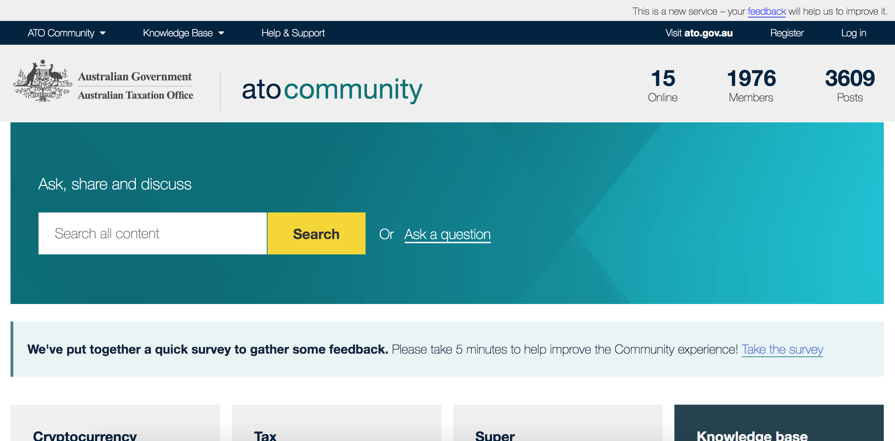
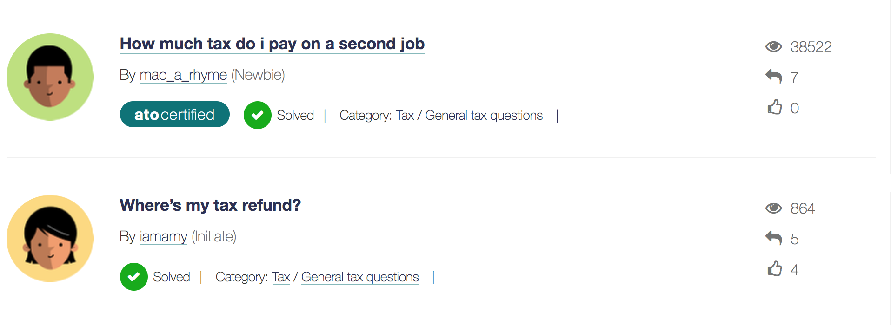

ATO Community
ATO wanted to create an online forum to try to alleviate pressure on the call centre. The forum needed to be designed and developed to be user-centred.

The problem
A testing plan to cover all stages of the design and development life cycle.
The solution
A research plan
- Contextual interviews (forum use and "paper" prototype testing)
- Moderated usability testing (find early problems with key tasks)
- Unmoderated remote usability testing of public beta (test tasks that need the numbers and baseline satisfaction)
- Online survey (learnability of content types and ongoing satisfaction)
My role
Lead researcher
- Developed the research plan
- Facilitated interviews
- Moderated usability testing sessions
- Led construction of remote test
- Advocated for and developed a Python analysis process
- Guided survey construction
Contextual Inquiries
Why - Forum use and "paper" prototype testing
Who - Tax pros and small business owners
How - Go to them, 1 hour, Brisbane and Canberra
Outcome - User needs and early feedback on prototype
Moderated usability testing of private beta
Why - Find early problems with key tasks
Who - Tax pros and small business owners
How - Round 1: usability lab 1 hour; Round 2: go to them, 1 hour
Outcome - Iterated design, re-test to validate changes, iterate again
Unmoderated remote usability testing of public beta
Why - Test search behaviour, content type understanding & satisfaction

Unmoderated remote usability testing (cont.)
Who - 250+ participants from subscriber lists such as ATO Beta and Let's talk, Tax Pros Newsroom
How - Used Loop11.com, set up script with tasks and survey questions. Python for data analysis.
Outcome - More testing was needed for the content types but baseline usability of tasks and satisfaction.
Online surveys of public beta
Why - Learnability of content types & ongoing satisfaction
Who - ATO Community users
How - UserZoom for branching surveys
Key contributions
- Brought research experience to the team
- Improved the analysis capabilities
- Mentored junior researchers
Research plan exercise
The Events from Facebook app, on both Android and iOS, allows users to explore, find, and stay up-to-date with events.
Goals
Find out who the users are, what they are doing, and what works and doesn't work for them.
Research questions
- Who has been using the Events from Facebook?
- What purpose/s are they users using the Events from Facebook?
- What are the key user tasks when using Events from Facebook?
- What works and doesn't work in accomplishing key user tasks?
Methodology
Constraint - 1 month
Analyse any existing data and online survey
Why
- The research questions have a large who and what component to them, so prioritising the first research questions I think these are best answered getting a large amount of data.
- Existing data will potentially provide evidence on demographics and key tasks
- Results will provide a firm base for future research to address other research questions in greater depth
- Optimal: mixed method approach
Week 1
Discovery and set-up
- Hold stakeholder workshop
- Preliminary analysis of any existing data
- Begin planning for survey, including,
- questions
- tool
- recruitment method and comms
About the survey
- Target demographic will be app users
- Aim for a survey length of about 5 minutes
- Targeted questions to answer research questions
- Mostly quantitative, i.e. numeric, multiple-choice, Likert scale
- Include 2 optional qualitative questions to explore purpose and what's working and what's not
Week 2
Release survey
- Finalise survey, including testing the questions
- Build survey and pilot test
- Release survey and comms to recruit participants
- Exploratory analysis of any existing data
Week 3
Collect survey responses and build analysis pipeline
- Build analysis pipeline using Python so that stats can be generated as responses come in, including data cleaning
- Promotion of survey to get more responses
- Start identifying trends in the data, i.e. who are the users, groups in the users, purposes, key tasks
Week 4
Wrap-up analysis and reporting
- Finalise analysis of survey data
- Identify key trends and any differences in demographics and / or behaviours
- Generate important statistics and graphs
- Tie together with trends from any existing data
- Hold a workshop with stakeholders to report outcomes
- Write a report on research outcomes
Intended outcomes
- Who are the users, including groups of users
- What their purpose/s are, including if there are differences in purposes for the different user groups
- Key tasks, including any differences in user groups
- Preliminary findings on what is and isn't working.
What's next
Further investigation using a qualitative approach, such as contextual interviews and usability sessions